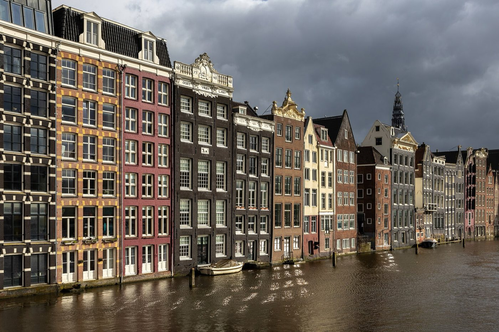
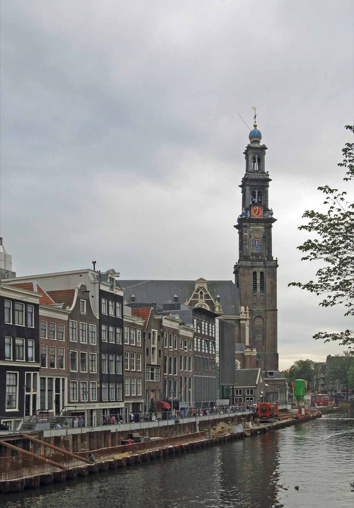
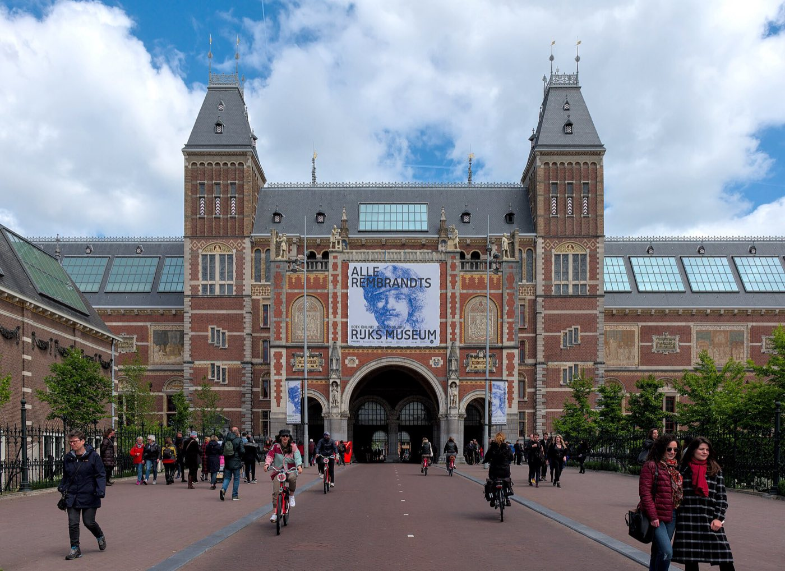

Amsterdam · 3 days
3 Days in Amsterdam: What You Actually Have to See
Amsterdam's center isn't a grid or a single main street. It's four concentric canals wrapped around a medieval core, with the Museum Quarter sitting entirely outside that ring. Cross those canals back and forth all day and you'll cover the same bridges four times; work one wedge of the ring per day instead and the whole trip gets shorter. Here's that order, plus the one booking window that gates everything else.

Amsterdam's old center sits inside a horseshoe of four canals, Singel, Herengracht, Keizersgracht and Prinsengracht, built outward from the medieval core between 1613 and 1660. They curve around that core instead of cutting straight through it, so the city reads as a fan of wedges rather than a grid: the Red Light District and Dam Square sit at the hinge in the middle, the Nine Streets cut across the ring where the shopping happens, Jordaan sits just outside the outer canal to the west, and the Museum Quarter sits in a completely separate ring further south, past the Singelgracht. Nothing about that shape rewards jumping between wedges. A day spent crossing all four canals and doubling back covers the same handful of bridges over and over for no reason.
The itinerary below works one wedge a day: the historic hinge and the ring canals first, the Museum Quarter second, Jordaan and the water itself third. It also front-loads the one booking deadline that actually breaks a trip if missed. Anne Frank House releases its entire calendar six weeks out, in one batch, on a fixed schedule, and there's no walk-up option at all.
One wedge a day, not four canals crossed and recrossed. The old center, the ring canals and Jordaan sit in a horseshoe; the Museum Quarter sits entirely outside it, past the Singelgracht. Give each wedge its own day and every canal gets crossed once instead of four times.
Day 1 — The hinge and the ring: Dam Square, De Wallen and the Nine Streets to Anne Frank House
Book Anne Frank House the moment your dates are fixed, not when you land. Every ticket for the museum releases at once, every Tuesday at 10am CEST, for a date exactly six weeks ahead. There's no daily trickle and no door sales: miss the release for your date and the calendar for that day is simply gone until something is cancelled. Set a reminder for the Tuesday that lands six weeks before your visit and be online at 10am.
Start at Dam Square, the hinge the whole horseshoe swings from, then walk into De Wallen, the old center's medieval core and the neighborhood that gives Amsterdam its Red Light District reputation. It's worth seeing in daylight for the Oude Kerk and the narrow canal houses alone. One rule matters more than any sightseeing tip here: never point a camera at a window with a sex worker in it. It's enforced, aggressively, by both the workers and their security, and it's the fastest way to have a phone taken off you. Photograph the architecture and the canals; leave the windows alone.
From De Wallen, cut across the ring through the Nine Streets, De 9 Straatjes, nine short cross-streets threaded between the four main canals and dense with independent shops and cafés. Walking their length doubles as the crossing from the old center to Prinsengracht, the outermost canal, right where Anne Frank House sits beside the Westerkerk's tower. The museum stays open until 10pm with last entry at 9, so there's no need to rush the rest of the day to fit it in before a closing time.
The must-sees
One crossing of the ring, from the hinge at Dam Square out to Prinsengracht.

Day 2 — The Museum Quarter: Rijksmuseum and Van Gogh Museum
The Museum Quarter sits in its own ring, south of the Singelgracht and entirely outside the horseshoe of canals from day one, so this day doesn't cross anything from the old center at all. It's built around Museumplein, the square the Rijksmuseum, the Van Gogh Museum and the Concertgebouw all face onto, with Vondelpark a short walk further west.
Both museums run timed entry, and both sell out ahead in the warmer months. The Rijksmuseum is open daily 9am to 5pm and generally has slots within two to three days outside summer, but book at least a week ahead from June through August or over a school holiday. The Van Gogh Museum is stricter: it's online-ticket-only with no door sales at all, and April through October it regularly sells out days in advance. Treat it the same as Anne Frank House and book the date the moment it's set, before the rest of the trip is even planned.
Doing both museums well in one day is tight but doable. Put the one that matters more to you first, while the legs are fresh, and treat the other as a shorter visit. Vondelpark afterward needs no ticket and no schedule, which after two timed-entry museums back to back is exactly the point.

The must-sees
A separate ring entirely, no canal crossing needed from day one's route.
Day 3 — Jordaan and the water itself
Jordaan sits just outside Prinsengracht, the outer canal from day one, close enough that this day starts almost exactly where the first left off, with no crossing back into the center required. It was built as a working-class neighborhood outside the wealthy ring and still reads that way: narrower streets, fewer grand facades, more independent galleries and a genuinely residential feel that the ring canals, full of former merchant houses, don't have.
This is also the day to get onto the water rather than just walk beside it. A canal cruise, an hour or so, covers ground that would otherwise mean recrossing all four canals on foot. It's the one way to actually see the horseshoe shape; a map only gestures at it. Renting a bike is the other option and works well once you're confident with Dutch cycling rules: keep right, signal turns by hand, never stop in the cycle lane, and stay off your phone, since traffic fines apply to cyclists too. First-timers do better starting in a quieter stretch, Jordaan itself or Vondelpark from day two, before riding through the denser ring canals.
Neither the cruise nor a bike ride needs booking weeks out, which after two days of timed museum tickets is a genuine change of pace. The one thing worth checking against your dates is the Noordermarkt, Jordaan's Monday morning flea market and Saturday farmers' market; outside those two mornings, the square is just a square.
The must-sees
Starts where day one ended, at the outer canal, and moves onto the water itself.
What to book, and how far ahead
| What | Booking window | So |
|---|---|---|
| Anne Frank House | Releases in full, every Tuesday 10am CEST, for the date 6 weeks out | Mark the Tuesday and be online then; no door sales exist |
| Van Gogh Museum | Online only, no walk-up tickets | Book as soon as dates are fixed; regularly sold out days ahead April–October |
| Rijksmuseum | Same-week slots often available off-season | Book at least a week out in June–August or over school holidays |
| Canal cruise | Same-day or next-day booking usually fine | The one thing on this itinerary that doesn't need advance planning |
| Noordermarkt | No booking, but only runs Saturday and Monday mornings | Route day 3 through Jordaan on one of those two days if the market matters to you |
What three days does not cover
Cutting deliberately beats rushing. These need more time than a three-day trip has:
- Zaanse Schans — the windmill village outside the city is a genuine half-day round trip by train and bus, not an add-on to a day already built around the canal ring.
- The Rijksmuseum's full collection — this itinerary gives it a morning against the Van Gogh Museum. The building alone holds enough for a full day if paintings are the whole trip.
- A rijsttafel dinner done properly — Amsterdam's Indonesian rijsttafel restaurants serve a dozen or more small dishes over a long sitting, closer to a planned evening than a stop between other things.
- Museum het Rembrandthuis — real and worth seeing, but it sits back toward the old center from Jordaan, and this itinerary doesn't recross the ring a second time to reach it.
- A full bike tour of the outer neighborhoods — De Pijp, Oost and the harbor docklands are all a longer trip's worth of riding, past what three days inside the horseshoe and the Museum Quarter can reach.
Common questions about 3 days in Amsterdam
Is 3 days enough for Amsterdam?
For the essentials, yes. Three days covers the old center and De Wallen, Anne Frank House and the Nine Streets, the Rijksmuseum and Van Gogh Museum in the Museum Quarter, and Jordaan plus a canal cruise. It doesn't stretch to Zaanse Schans, a full day at the Rijksmuseum alone, or the outer neighborhoods beyond Jordaan. Zaanse Schans alone is a half-day round trip; the Rijksmuseum's full collection could fill a day by itself. Neither fits into whatever time is left over after the itinerary above.
How far in advance should I book Anne Frank House tickets?
Exactly six weeks. The entire calendar for a given date releases in one batch, every Tuesday at 10am CEST, six weeks before that date. There's no daily trickle of new slots and no tickets sold at the door, so missing the release usually means that date is gone for good.
Do you need a bike in Amsterdam?
No. Everything in this itinerary is reachable on foot or via one canal cruise. A bike is a genuinely good way to cover more ground on day three once you're comfortable with the rules, keep right, signal turns, never stop in the cycle lane, but it's an addition, not a requirement for three days built around the old center and the Museum Quarter.
Should I visit the Rijksmuseum or the Van Gogh Museum first?
Whichever one you care about more, since both run timed entry and doing both slowly in one day is tight. Book the Van Gogh Museum first regardless of viewing order: it's the stricter of the two to get into, with no walk-up tickets and regular sellouts from April through October, while the Rijksmuseum usually has same-week availability outside summer.
Is it OK to take photos in the Red Light District?
Of the buildings and canals, yes. Never of a window with a sex worker in it, which is treated as a serious violation by both the workers and their security and is the fastest way to have a phone confiscated or damaged. Point the camera at the architecture.
What day does the Noordermarkt run in Jordaan?
Saturday for the farmers' market, Monday morning for the flea market. Outside those two windows it's an ordinary square, so it's worth checking against your dates if the market itself is part of why you're visiting Jordaan.
Tailored to your trip
Travelling to Amsterdam? Plan your trip around your real arrival and departure times.
Download iOS App